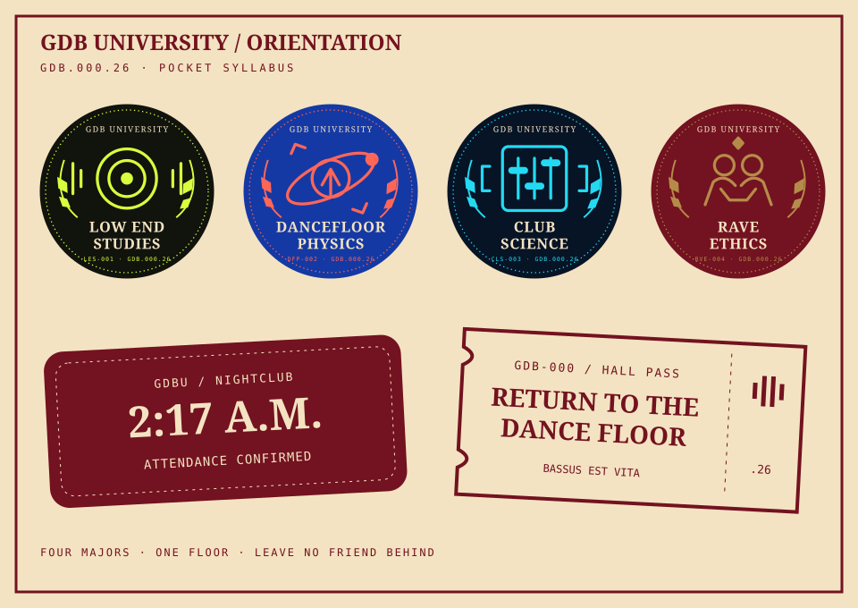

GDB UNIVERSITY
GDBU CAMPUS ID
FICTIONAL CAMPUS / DIGITAL EDITIONStudent statusON THE FLOOR
MajorDECIDE AT THE DROP
Orientation / Current identityGDB.000.26
IF FOUND, PLEASE RETURN TO THE DANCE FLOOR.
GDB.000.26 · Orientation
First night at GDBU. You brought the fit. Somebody brought the bassline. Find your people, claim a patch and keep the hall pass handy.
Orientation kit


Orientation at GDBU · Current edition
The major can wait. The dancefloor can’t.
A current digital campus badge. The original Student ID remains in the archive with its historical .91 code.
GDB UNIVERSITY
IF FOUND, PLEASE RETURN TO THE DANCE FLOOR.
The campus remembers · GDB.000.26
Pick your major. Stamp your little victories. Your Campus Passport remembers the next time you visit on this browser.
Saved on this browser only. No account or public visitor log.
0 / 4 FIELDWORK MARKS EARNED
GDB.000.26 · Pocket syllabus
For the tote, the tee, the friend who needs a major. New digital campus studies; future merch starts here.
Feel It In Your Ribs
Save LES-001 patch ↓The Floor Has The Answer
Save DFP-002 patch ↓One More Layer. Then None.
Save CLS-003 patch ↓Leave No Friend Behind
Save RVE-004 patch ↓
Four majors. One hall pass. No one remembers who said “one more,” but here we are.
Save the digital sheet ↓Digital artwork to keep. Physical patches and tees are concepts, not items for sale.
Archive note: the original Student ID artwork keeps its historical GDB.000.91 code. The current website identity is GDB.000.26.